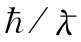

上面所用的波速是相速，即波节 [1] 的速率，它是频率的函数。若把式（24.17）和（24.18）结合起来，则可写出
（24.25）
对于比截止频率为高的频率——其中存在行波——ωc /ω小于1，而v相 为实数，且会大于 光速。我们曾在第1卷第48章中见到，相 速大于光速是可能的，因为那不过是波节在运动而不是能量或信息在运动。为知道信号 传播得多快，我们得算出由一个频率的波与另一个或更多个频率稍微不同的波互相干涉而形成的脉冲或调制波的速率（见第1卷第48章）。我们已把这样一群波的包络速率称为群速度，它不是ω/k，而是dω/dk：
（24.26）
取式（24.17）对ω的微商并颠倒过来以获得dω/dk，就求得
（24.27）
它比光速要小。
v相 与v群 的几何平均恰好就是c，也即光速：
v相 v群 =c2 . （24.28）
这很奇怪，因为我们已在量子力学中见过相似的关系式了。对于一个具有任何速度——即便是相对论性的——的粒子，其动量p与能量U都是这样联系着的：
U2 =p2 c2 +m2 c4 . （24.29）
但在量子力学中能量为ћω，而动量为 ，即等于ћk，因而式（24.29）便可以写成
这看来十分像式（24.17），真有趣！
波的群速度也就是能量沿导管传输的速率。如果想要求出沿波导传送的能流，则可以从能量密度乘以群速度而得到。设电场的方均根值为E0 ，则电场能量的平均密度为 。也有一些能量与磁场有联系，我们将不在这里来证明它，但在任一个空腔或导管中磁能与电能始终相等，因而总的电磁能量密度为 。于是，由导管传输的功率dU/dt为
（24.32）
（我们将在以后看到获得能流的更普遍的方法）。